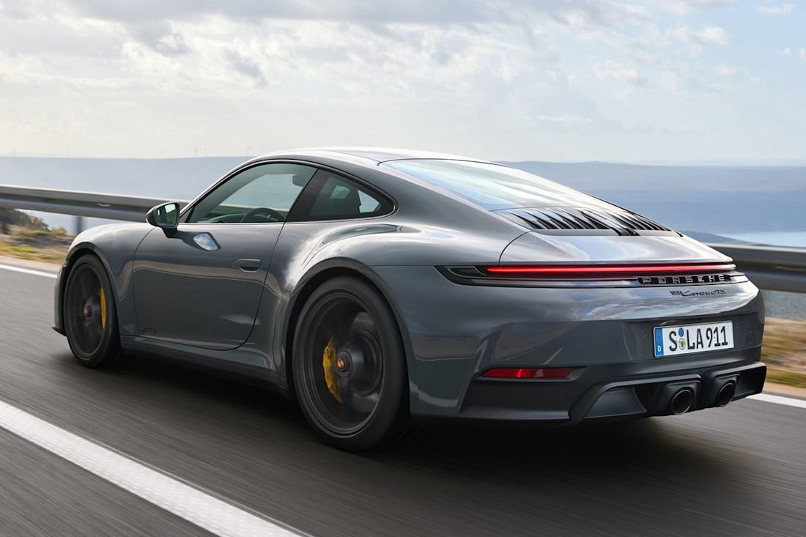

Porsche 911 Carrera
De los cuatro coches del proyecto, este es el que más me gusta.
Por qué es mi favorito
Me gusta porque mantiene la misma forma reconocible desde hace décadas, pero cada versión nueva es más rápida y moderna.
Según mi catálogo, la versión de 2019 tiene 385 CV, acelera en 4.2 s y llega a 293 km/h.

Ficha técnica
Marca ............. Porsche Modelo ............ 911 Carrera Año ............... 2019 Potencia .......... 385 CV Aceleración ....... 4.2 s Velocidad máxima .. 293 km/h Tipo .............. Deportivo Motor ............. Bóxer de 6 cilindros, trasero Debut del 911 ..... 1963
Un poco de historia
El 911 se presentó en 1963 en el Salón de Frankfurt y desde entonces ha mantenido su motor bóxer trasero.
El nombre Carrera recuerda a la Carrera Panamericana, una competición en la que Porsche ganó en su categoría a principios de los años 50.